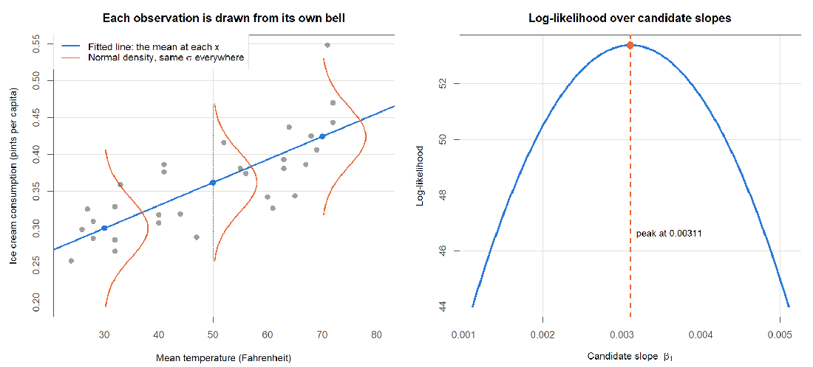

확률을 말하려면 오차에 분포가 필요. εi ~ N(0, σ²) 이면 yi ~ N(β0 + β1xi, σ²)

The normal-error model (left) and the log-likelihood over candidate slopes (right)
무엇을 보는가
관측마다 종이 하나씩 있고 중심만 직선을 따라 움직임. 폭 σ 는 어디서나 같음
무엇을 얻는가
곡선의 꼭대기 β̂1 = 0.00311 은 제곱합 곡선의 바닥과 같은 자리 — 위아래로 뒤집은 모양
3. Simple Linear Regression
17 / 28